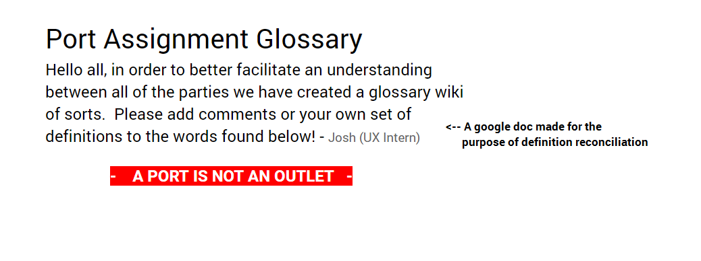

How do we assign a port to a client efficiently without confusion?
Meet Atlas. Atlas is an Oracle application currently that was used by the NIS department at Virginia Tech to provision services such as VOIP phones, internet, and more. It's clunky, offers an incredibly uncomfortable user experience, and takes up to 6 months to learn how to operate fully. Due to many complaints with the existing client, project Orchestra or "ORCA" for short was started.
THE MISSION:
Reduce product delivery from 10 days to 2 by reducing user interactions.
My job in this process was to improve/replace a small segment within Atlas which had a varying slack time of several hours to a day. This process involved the assignment of ports (server room) to an outlet.
Before beginning any prototypes or models, my team and I first went about doing initial ethnographic research. With permission from our users, we operated as a two-person team during our shadowing sessions- one recording video, the other taking notes of key emotional touchpoints. We made sure to request the users to operate as if it were a normal daily task and suggested reflecting on the day before if they ever needed to recall information. Furthermore, we collected existing screenshots of Atlas to determine existing work flows in the port assignment process.
One of the largest roadblocks in this was the lack of understanding as to what a "port" was vs. a "portal" vs an "outlet."
To our dismay, our development team had been addressing "port" as the outlets you would see on a wall while field engineering referred to "port" as a plug in the closet. To address this, we collected definitions from all existing user groups and held cross-functional meetings to determine a conclusive term list for us all to use moving forwards.
Upon conclusion of our research, we took note that the port assignment process was needlessly complicated and could be significantly abbreviated using a more user friendly GUI. Any confusing points were re-iterated with the users to ensure that we had a tangible understanding of the process.
After mapping out flow models of the interractions and steps needed, we decided to go about making crazy eights to develop design implementation ideas. From our collective ideas, we were able to build a rough low fidelity storyboard prototype of the port assignment process.
Upon several iterations with the users and developers, we started building mid-fidelity prototypes as well within UXPin (credit to my GTA partner Zoey). Using UXPin as an interraction base, we were able to conduct usability tests before moving on to a higher fidelity prototype.
Using bootstrap, I started building a high fidelity prototype for our users to experience. To build one that illustrated all possible routes within the port provisioning process, I created three possible conditionals: one to illustrate a denied request, one for a successful request, and another for an automatic assignment.
You can check out the prototype here!As a result of this segment of ORCA, we were able to clarify appropriate definitions to use moving forwards between all user groups. Furthermore, through our prototyping process we were able to provide a visualization for developers and users to work with and give insight to; this in turn allowed us to iterate upon the feedback to ensure a better final product. The project has been handed off to the developers now, but the UX team remains in contact with them to ensure it remains a progressive process that's not disjointed and maintains the user's goals.
Communication is the foundation of business. Without the right mediums, operations are handicapped. One of the key values NIS holds is to "speak simply"- what it should also translate to is "speaking with the same terms." Atlas was a decaying operation as a result to terminology confusion; to prevent this, it's important for organizations to utilize internal intranets and wikis on top of promoting regular discussions with relevant cross-functional groups to ensure parallelism.